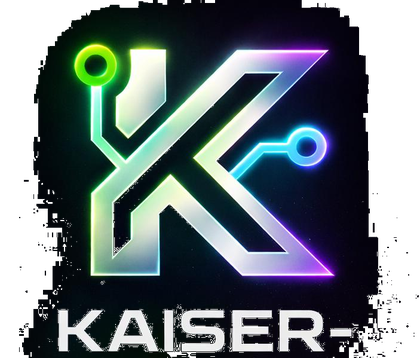

WEBDESIGN AUS DINKELSBÜHL
Deine Marke.
Digital auf einem
anderen Level.
Individuelles Webdesign. Klare Strategie. Ein Auftritt, der deine Qualität sichtbar macht – und aus dem ersten Eindruck den nächsten Schritt werden lässt.
Gute Arbeit verdient
einen Auftritt,
der ihr gerecht wird.
Dein Unternehmen hat eine eigene Geschichte, eigene Stärken und einen eigenen Anspruch. Genau das soll man online erkennen.
Ich übersetze das in eine Website, die sich nach dir anfühlt, dein Angebot verständlich macht und Besucher gezielt zur Anfrage führt.
Was ich für dich entwickleAusgewählte Arbeiten
Websites mit
eigenem Charakter.
Vier Projekte, vier eigene Handschriften. Entscheidend ist nicht, dass jede Website gleich aussieht – sondern dass sie zum Unternehmen passt.
Weitere Projekte
GUTE GESTALTUNG BEGINNT MIT DEN RICHTIGEN FRAGEN.
Ein starker Auftritt.
Bis ins Detail durchdacht.
Jede Entscheidung hat eine Aufgabe. Hier siehst du, wie aus einer klaren Richtung ein unverwechselbarer Auftritt wird.
STRATEGIE & POSITIONIERUNG
Was verkaufst du –
und an wen?
Bevor eine Website gut aussieht, braucht sie eine klare Richtung. Wir schärfen dein Angebot, deine Zielgruppe und die Geschichte, die dein Auftritt erzählt.
ORIENTIERUNG & KONTAKT
Was muss ein Besucher
als Nächstes wissen?
Die richtige Information im richtigen Moment. Verständliche Leistungen, schnelle Ladezeiten und Kontaktwege, die Besucher ohne Umwege zum Ziel führen.
WEBDESIGN & ENTWICKLUNG
Wie fühlt sich deine
Marke digital an?
Kein austauschbares Template. Typografie, Bilder und Bewegung bekommen eine eigene Handschrift – auf dem Smartphone genauso sorgfältig wie am Desktop.
PFLEGE & WEITERENTWICKLUNG
Was passiert nach
dem Launch?
Dein Unternehmen bleibt in Bewegung. Dein Auftritt kann mitwachsen: mit neuen Inhalten, weiteren Seiten und persönlicher Unterstützung nach Vereinbarung.
Eine klare Richtung.
Ein Auftritt, der zu dir passt.

Dein 3D-Erlebnis wird vorbereitet.
DEINE MARKE. AUS JEDER PERSPEKTIVE.
Mehr als ein Bild.
Ein echtes Erlebnis.
Form, Licht und Material machen deine Marke räumlich erlebbar. Direkt auf deiner Website. Dreh das K, wechsle das Material und entdecke, was aus einem ersten Blick werden kann.
AURELIA YACHTS / FREIES KONZEPT
Eine Yachtmarke.
Wie ein Film erzählt.
Aurelia ist ein freies Konzept für eine fiktive Yachtmarke. Die Seite beginnt mit einer Einladung. Danach steuert dein Scrollen die Filmszenen, vom Atelier bis aufs offene Meer.
Scroll steuert die Szene.
Der Scrollweg wird zur Timeline. Inhalte reagieren kontrolliert auf die Bewegung statt einfach nur einzublenden.
Bewegung führt den Blick.
Zoom, Perspektive und Übergänge setzen die wichtigen Momente in Szene und halten den Nutzer im Flow.
Story statt Effekt.
Animation hat eine Aufgabe: Das Produkt verständlicher, hochwertiger und erinnerbarer zu präsentieren.
Von „Ich habe eine Idee“
zu „Das sind wir“.
Vier Schritte. Direkter Austausch.
Ein Ergebnis, das zu dir passt.
Verstehen.
Wir sprechen über dein Unternehmen, deine Kunden und das Ziel deiner Website. Vorhandene Inhalte und offene Fragen kommen auf den Tisch.
Ergebnis: ein gemeinsames BriefingRichtung finden.
Ich entwickle Struktur und Gestaltung. Du siehst früh, wohin es geht, und gibst Feedback, bevor die Umsetzung ins Detail geht.
Ergebnis: abgestimmtes KonzeptAusarbeiten.
Design, Inhalte und Funktionen werden zur Website. Wir verfeinern die Ansichten und prüfen Lesbarkeit, Bedienung und Kontaktwege.
Ergebnis: deine fertige WebsiteLive gehen.
Nach deiner Freigabe veröffentlichen wir den Auftritt. Du bekommst eine Übergabe; weitere Pflege vereinbaren wir bei Bedarf.
Ergebnis: bereit für deine KundenGUT ZU WISSEN
Ein paar Fragen.
Klare Antworten.
Was du vor dem ersten Gespräch
wissen solltest.
Du sprichst direkt mit mir und bekommst klare Antworten ohne Umwege.
So wird schon vor dem Start transparent, was auf dich zukommt und was ich dir abnehme.
Für wen ist Kaiser Webdesign die richtige Wahl?
Für Selbstständige und Unternehmen, die Wert auf einen eigenständigen Auftritt und persönliche Zusammenarbeit legen. Besonders gerne arbeite ich mit Handwerk, Dienstleistern und lokalen Unternehmen. Projekte können wir auch deutschlandweit gemeinsam umsetzen.
Was kostet eine Website?
Ein einfacher Onepager startet ab 349 €, Business mit bis zu fünf Seiten ab 879 € und Premium mit bis zu acht Inhaltsseiten und einer cineastischen Scroll-Sequenz ab 1.449 €. Zusätzliche Seiten und Funktionen kannst du im Website-Konfigurator zusammenstellen. Du siehst dort eine unverbindliche Preisorientierung; das verbindliche Angebot stimmen wir persönlich ab.
Wie lange dauert die Umsetzung?
Der Zeitplan richtet sich nach dem Umfang, den vorhandenen Inhalten und unseren Abstimmungen. Im Briefing klären wir deinen Wunschtermin und legen realistische Meilensteine fest.
Brauche ich bereits fertige Texte und Bilder?
Nein. Wir sichten gemeinsam, was vorhanden ist und was noch fehlt. Unterstützung bei Texten, Struktur und der Bildauswahl planen wir bei Bedarf ein. Zusätzliche Leistungen stimmen wir vorab ab.
Kann meine Domain und mein Hosting bleiben?
In vielen Fällen ja. Bei einem Relaunch prüfe ich deine bestehende Umgebung. Domain, E-Mail und vorhandene Inhalte berücksichtigen wir in der Planung, bevor Änderungen vorgenommen werden.
Kann ich später selbst Inhalte ändern?
Wenn du regelmäßig Inhalte pflegen möchtest, planen wir ein passendes Redaktionssystem ein. Alternativ übernehme ich Änderungen nach Vereinbarung. Wir wählen die Lösung danach, wie du tatsächlich arbeiten möchtest.
Was ist mit Google und der mobilen Ansicht?
Eine saubere Seitenstruktur, passende Metadaten, mobile Darstellung und technische Grundlagen gehören zur Umsetzung. Weitergehende Suchmaschinenoptimierung stimmen wir nach Bedarf ab. Eine bestimmte Platzierung bei Google lässt sich nicht versprechen.
KAISER WEBSITE STUDIO
Mach deine
Vorstellung sichtbar.
Deine Idee nimmt Form an. Wähle den passenden Umfang, entdecke deinen Stil und sieh direkt, womit du rechnen kannst.
Seitenstruktur ansehen
Alle Angaben dienen der Preisorientierung. Hosting, Domain, externe Dienste und Lizenzen sind nicht enthalten. Die endgültige steuerliche Ausweisung erfolgt im persönlichen Angebot. Texte und Bildmaterial werden bereitgestellt, sofern nicht zusätzlich gewählt.
Was hast
du vor?
Erzähl mir von deinem Unternehmen und deinem Ziel. Ich melde mich persönlich mit einer ersten Einschätzung und den nächsten Schritten.
ivan@kaiser-webdesign.de Ivan Kaiser · Dinkelsbühl
CONTENT, DER WEITERDENKT.
WEBSITE + CONTENT
Die Website ist
dein Ziel.
Content bringt
Menschen hin.
Deine Website und dein Content erzählen dieselbe Geschichte. Reels wecken Interesse. Dein Auftritt gibt Orientierung. Zusammen wird daraus eine Marke, die im Kopf bleibt.
Instagram ansehen ↗